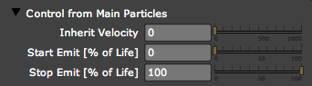
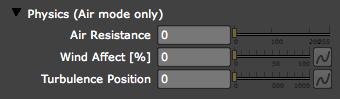
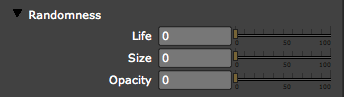

Particle Trail Effect.
Now let's roughen up the animation a bit and make it look more like each particle is emitting a heavy trail. We'll do this by giving the Aux Particles some initial random velocity. Set Aux System>Velocity to 10.

Aux System tab> Control from Main Particles, Physics, Randomness groups
The Aux System is a particle system within the main particle system. Aux particles are emitted from the main particles system, and their behavior is great for creating effects like particle trails.
There are three subsections covered here: Control from Main Particles group, Physics (Air mode only) and Randomness group. You can read a tutorial for 'Emitting Particles from Particles' at the bottom of this page.
Control from Main Particles group
This group lets you modify how and when the Aux particles are emitted by the Aux System. Useful for getting more variation in the Aux particle behavior, which contributes to a more natural effect. There are three controls in this group: Inherit Velocity, Start Emit and Stop Emit.

Control from Main Particles> Inherit Velocity
The Inherit Velocity control lets you add motion to the Aux particles. Inherit Velocity limits the creation of Aux particles based on the lifetime of the main particle. High values make the Aux particles move faster because they start out with, or 'inherit', more velocity. The main particle velocity is set in Emitter group> Velocity.
Control from Main Particles> Start Emit
Control from Main Particles> Stop Emit [% of Life]
The Start and Stop Percentage controls define when the Aux particles appear in the life of the main particles. The Start and Stop values are a percentage of the Particle> Life [sec] value. For example, if Start and Stop are set to 20 and 80, then the Aux particles will appear starting at 20% of the main particle Life [sec] value and will stop appearing at 80% of the same value. A value of 0 and 100 respectively will emit Aux particles from the beginning to the end of the main particle's life.
Physics (Air mode only) group
This group gives the Aux particles separate settings for three controls in the Physics> Air group. This lets the Aux particles take on different physics-based behavior than the main particles, which can make your animation more interesting. There are three controls in this group: Air Resistance, Wind Affect and Turbulence Position.

Physics (Air mode only)> Air Resistance
Air Resistance will modify the value set in Physics> Air> Air Resistance. A value of 0 adds no air resistance. A value of 255 causes full air resistance modification to just the aux particles.
Physics (Air mode only)> Wind Affect [%]
Wind Affect is a multiplier that will increase the Physics> Air> Wind motion in X, Y, and Z space for the Aux particles. Wind Affect is measured in a percentage. With values less than 100, Wind Affect decreases the Wind motion speed. With values greater than 100, Wind Affect multiplies and increases the Wind motion speed.
For example, a Wind Affect value of 80 causes the Aux particles to move at .8 times the Wind values in the Physics> Air section. A value of 275 will multiple the Wind values by 2.75 times the original speed.
Physics (Air mode only)> Turbulence
Turbulence Position is the same setting as Affect Position value in the Physics> Air> Turbulence Field group. However, this Turbulence control only changes the Aux particles offset by the Turbulence Field. It does not affect the displacement of the main particles.
Randomness group
This group applies a randomness value to certain parameters in the main Aux System tab. Useful for getting more natural variation in the overall particle behavior. There are three controls in this group: Life, Size and Opacity.

Randomness> Life
Sets a randomness factor to how long the Aux particles live. Affects the Life [sec] value in the Aux System tab.
Randomness> Size
Sets a randomness factor to the size of the Aux particles. Affects the Size value in the Aux System tab.
Randomness> Opacity
Sets a randomness factor to the opacity of the Aux particles. Affects the Opacity value in the Aux System tab.
Tutorial: Emitting Particles from Particles
Let's emit some particles with the Aux System. For our tutorial, we are working with a 640*480 composition at 30 fps and 5 seconds long.
When emitting particles from particles, you can easily generate an overwhelming amount of particles. Let's start by decreasing the emission of the main particle system. Set Emitter> Particles/sec to 20. Not too exciting yet.
Basic Aux particles. We will get the excitement going by activating the Aux System. Set Aux System> Emit to Continuously. Set Type to Same as Main. To make the Aux Particles stronger, set Aux System> Opacity to 100. Now we have particles generated from the particles.
|
||
Particle Trace Effect. To get a long trace for each particle, set Aux System> Life to 5. This way the Aux Particles lives long enough to produce a long trail. To get a denser trace, set Aux System> Particles/sec to 20.
|
||
Organic Lines Effect. So far, the Aux Particles have just been standing still. Let's see what happens if we put some motion to them. Let's add some gravity by setting Gravity to 100, and then click OK. Try RAM preview: Notice that the Aux System has its own Gravity control. To change gravity for the main particles, use the Physics tab> Gravity control. |
||
Particle Trail Effect. Now let's roughen up the animation a bit and make it look more like each particle is emitting a heavy trail. We'll do this by giving the Aux Particles some initial random velocity. Set Aux System>Velocity to 10. |
|
|